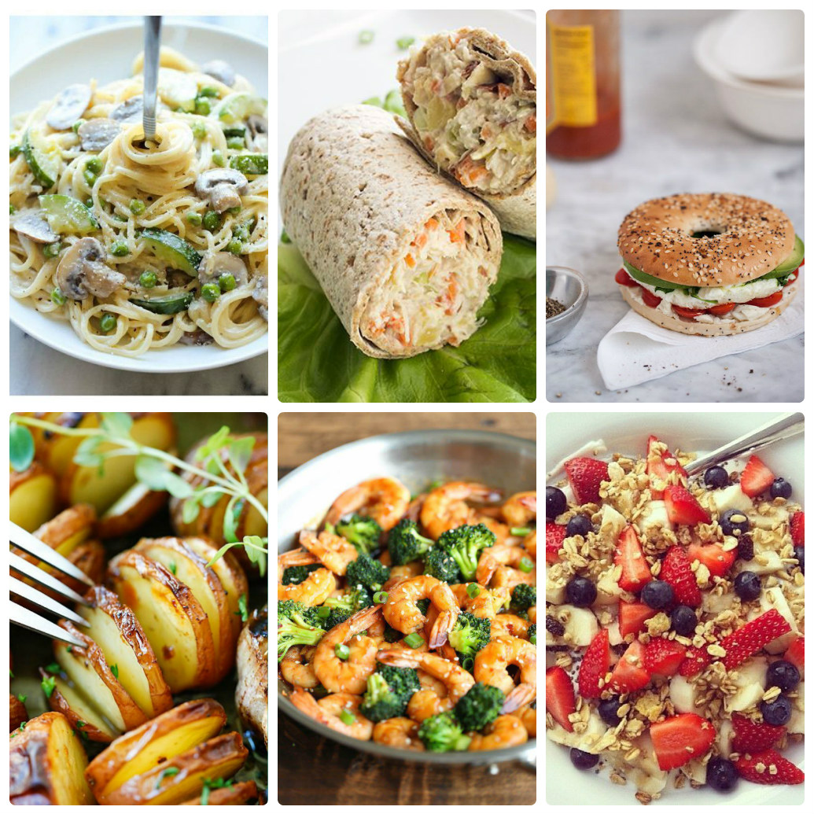

Немного о правильном питании

По материалам книги Геннадия Петровича Малахова
" Лечебное и раздельное питание . "
А также из других источников Интернет
Уважаемый Читатель - после ознакомления с Книгой
рекомендую Вам заказать ее бумажное издание.
Классик оздоровления Геннадий Петрович Малахов предлагает вам познакомиться с простыми принципами здорового питания и перейти на так называемое видовое питание, которого придерживались люди с незапамятных времен.